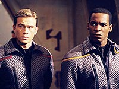
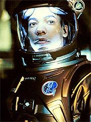
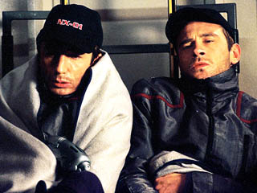
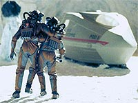
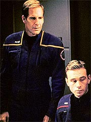
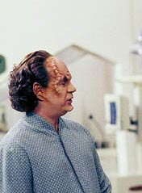
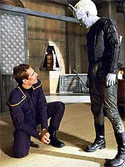

|
Dores
de crescimento de uma tripulao

Uma srie no papel e uma srie em
produo so duas coisas completamente diferentes. Voyager,
por exemplo, era considerada pela maioria dos fs como a melhor
das premissas criadas para uma srie derivada de Jornada.
Sete anos depois, apenas uns poucos mantiveram a opinio.
Da mesma forma, Enterprise s comea a mostrar sua
verdadeira face agora, quase um ano aps o incio de sua produo.
Ainda muito cedo para apontar se a construo de uma srie
em um perodo pr-clssico foi uma opo vivel ou no, ou
se os produtores souberam lidar com as possibilidades e construir
boas histrias em torno da Enterprise de Jonathan Archer.
Em compensao, algo que j d para notar que Enterprise
no ser o que seus criadores, Rick Berman e Brannon Braga,
imaginaram, em termos da evoluo dos personagens da srie. Com
apenas uma temporada concluda, j possvel detectar vrios
desvios com relao aos planos originais da dupla.
 Algumas
das coisas que eles ambicionavam para os tripulantes da Enterprise
s apareceram mesmo no piloto da srie, "Broken
Bow". Depois, foram totalmente varridas para debaixo
do tapete. O mais gritante desses exemplos o relacionamento
entre Charles Tucker e Travis Mayweather.
Nas listas dos personagens distribudas a agncias de atores em
todos os EUA durante o perodo de escalao das estrelas da srie,
Tucker e Mayweather eram listados como os "dois amigos"
da Enterprise. Pela descrio, parecia um pouco a relao que
Berman, Michael Piller e Jeri Taylor queriam para Harry Kim e Tom
Paris, em Voyager.
 Segundo
aquele documento, que delineava os princpios bsicos da srie,
Mayweather seria retratado como o mais "experiente" dos
tripulantes da nave --altamente acostumado ao espao por ter
nascido em uma nave cargueira da Terra. Ele estimularia seu amigo
Tucker, com quem desenvolveria um relacionamento rapidamente, a
procurar novas formas de explorar o espao e se divertir. Um ano
depois, nada disso acabou acontecendo. Em "Broken
Bow", uma pista desse relacionamento foi deixada, com
Mayweather e Tucker conversando na cena em que o piloto apresenta
ao engenheiro o tal do "sweet spot", onde a gravidade
artificial da nave se invertia e a dupla podia se sentar no teto.
A cena, como no seria difcil de prever, foi uma das piores
coisas do piloto da srie. Os atores claramente no demonstraram
a qumica necessria e a situao pattica criada para os
dois no piloto no ajudou nada a inspirar a tal
"amizade".
Com o abandono desse relacionamento, quem ficou rfo foi o
pobre Mayweather, que est at agora se mostrando o verdadeiro
"coitado" da srie. A amizade foi reconstruda para
Tucker e Malcolm Reed. O armeiro da nave, diga-se de passagem, se
mostrou muito mais adequado ao conceito original, e a qumica de
Dominic Keating com Connor Trinneer funcionou maravilhosamente. O
elo final foi forjado em "Shuttlepod
One", em que a dupla, sozinha em uma pequena nave,
precisa levar um episdio inteiro nas costas, base de muito
carisma e dilogos afiados.

 Mayweather,
em compensao, perdeu at sua caracterstica de
"explorador experiente". O pobre piloto parece na
verdade o mais ingnuo e incapaz dos tripulantes da nave. No s
ele se mostra totalmente inseguro em quase todos os momentos
(culpa at do ator Anthony Montgomery, que no conseguiu
imprimir nenhuma qualidade a seu personagem; Keating, por outro
lado, trabalhou nos detalhes nos episdios iniciais e foi
premiado com mais destaques na segunda metade da temporada,
mostrando como um ator parte importante da forma que a srie
acaba tomando), como chega a parecer um pateta completo, s
vezes. Em "Breaking
the Ice", por exemplo, o alferes, que devia estar
acostumado baixa gravidade, sofre uma queda na superfcie de
um cometa, contundindo-se! E, ao que parece, ele sofrer uma nova
queda mais adiante, em "Two
Days and Two Nights", desta vez em uma escalada.
melhor nosso piloto ficar longe dos esportes radicais por
enquanto...
 Outra
coisa que acabou no saindo conforme os planos de Berman e Braga
para os personagens foi a relao de Archer e Tucker.
Originalmente, os produtores pensavam em Archer como um guia, um
tutor, uma espcie de modelo para Tucker. O engenheiro teria seu
capito como inspirao --algo que ele "queira ser quando
crescer". Uma temporada depois, o que se viu no foi essa
relao patriarcal, mas algo muito mais no sentido de uma
profunda amizade com igualdade de voz para os dois personagens.
Tucker v Archer como um amigo, mas certamente no como um dolo
ou um pai. Os dois se tratam colocando um ao outro no mesmo nvel
--o que funcionou muito bem, criando um dos melhores e mais
entusiasmantes relacionamentos da srie.
A relao patriarcal acabou ficando para Archer e Mayweather. Se
de sada os produtores pretendiam criar alguma tenso entre os
dois, uma vez que Mayweather, apesar de estar inferiormente
colocado na Enterprise, estaria familiarizado com as
peculiaridades e as dificuldades da vida no espao, ficou claro
aps alguns episdios que essa situao no iria decolar.
Mayweather ento passou a ser apenas o "maior f" do
capito, e a relao dos dois parece com uma de pai e filho.
 Nos
dois principais relacionamentos de amizade formados para a srie,
encontramos um denominador comum: Trinneer e seu Tucker. No
mera coincidncia; tirando John Billingsley (Phlox), cujo
personagem no permite esse tipo de interao com os demais
tripulantes, Trinneer foi o ator que melhor soube encarnar seu
personagem e incluir nele caractersticas suas. Certamente isso
facilitou na hora de os escritores da srie encontrarem a
"voz" do personagem, o que por sua vez estimulou o
desenvolvimento de relacionamentos em torno dele.
At em situaes em que o outro personagem no est ainda bem
resolvido na tela, como a Vulcana T'Pol, Tucker consegue se sair
bem. T'Pol pode ser uma personagem ainda um pouco mal definida,
mas certamente j sabemos o que esperar dela quando o assunto
o engenheiro. Mais uma vez, o mrito de Trinneer e dos
roteiristas.
Alm de T'Pol, Hoshi Sato e o capito Jonathan Archer vo
merecer um melhor polimento na prxima temporada. A primeira
ainda sofre com uma certa inconstncia em sua voz Vulcana --o que
no culpa de Jolene Blalock, que est carregando bem o
material que lhe dado, mas dos roteiristas e produtores, que
ainda no encontraram o equilbrio certo para T'Pol.
Hoshi Sato tem uma personalidade j bastante definida, mas falta
acertar um pouco mais sua rede de relacionamentos com os demais
tripulantes. Sua relao com Phlox parece bastante interessante
(vista em relances, principalmente em "Dear
Doctor"), mas o maior potencial talvez resida em
Mayweather. Aparentemente, a dupla tem uma certa afinidade na
ponte, talvez pelo fato de serem os oficiais seniores menos
experientes e mais jovens, que poderia ser melhor trabalhada. O
piloto, que anda sendo sistematicamente ignorado nos roteiros,
poderia muito bem se beneficiar de um maior contato com Hoshi.
Falta, entretanto, algum episdio que sirva de veculo para o
relacionamento, a exemplo do que "Shuttlepod
One" fez por Tucker e Reed.
O capito Archer est com alguns problemas. Sua voz
definitivamente foi capturada em "Broken
Bow", onde ele esteve fantstico, mas depois acabou
perdida em meio aos outros episdios. Ele comeou a srie como
um sujeito determinado, teimoso, agressivo e inteligente, e agora
parece mais um cachorrinho lambo, querendo agradar todos os
aliengenas que v pela frente. O resultado a srie interminvel
de surras que o capito vem levando (duas bem notrias esto em
"The Andorian Incident"
e "Acquisition").
 O
prprio Brannon Braga confessou recentemente que a pancadaria
desenfreada contra Archer proposital e que os produtores querem
com isso fazer o capito aprender com os prprios erros e ir
amadurecendo aos poucos para sua condio de lder, mas o fato
que no est funcionando. Embora tenha momentos de destaque e
seja um personagem muito simptico, simpatia e carisma no
bastam --Archer at agora o mais fraco dos capites de Jornada
nas Estrelas.
com essa situao que os produtores precisaro lidar na prxima
temporada. Meia tripulao j parece bastante resolvida e
amadurecida, com as caracterizaes slidas de Tucker, Phlox e
Reed. Outros trs precisam de mais trabalho, T'Pol, Hoshi e
Archer. E quanto ao Mayweather... bom, antes de mais nada, os
roteiristas precisam lembrar que ele existe. Mas ainda h esperana
para todos, inclusive o piloto da Enterprise.
Ah, as dores de crescimento de uma srie de televiso... Para
quem no sabe do que estou falando, experimente tirar o mofo das
suas fitas do primeiro ano de A Nova Gerao.
Salvador
Nogueira, jornalista, escreve regularmente
sobre
a nova srie de Jornada nas Estrelas para o Trek
Brasilis
|